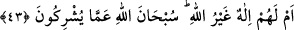

43. Veya onların Allah’tan başka bir tanrısı mı var? Allah, onların ortak
koştukları şeylerden uzaktır.
“Yoksa onların Allah’tan başka” kendilerine yardım edip O’nun azabından koruyan
“bir tanrısı mı var?” Allah Teâlâ bundan beridir. “Allah onların ortak koştukları
şeylerden uzaktır.” Şârik ve ortaklardan yücedir. “Allah, onların şirk koştukları şeye
ortaklık etmekten yücedir, beridir” şeklinde olur.
İzzet eteğine şirkin tozu bile konamazken,
O’nun birliği hakkında kim şirkten bahsedebilir?
Ne zaman O’nun vasfı hayâle düşse,
O’nun kemâl eli gayret (kıskançlık) ateşiyle o hayali yakar.